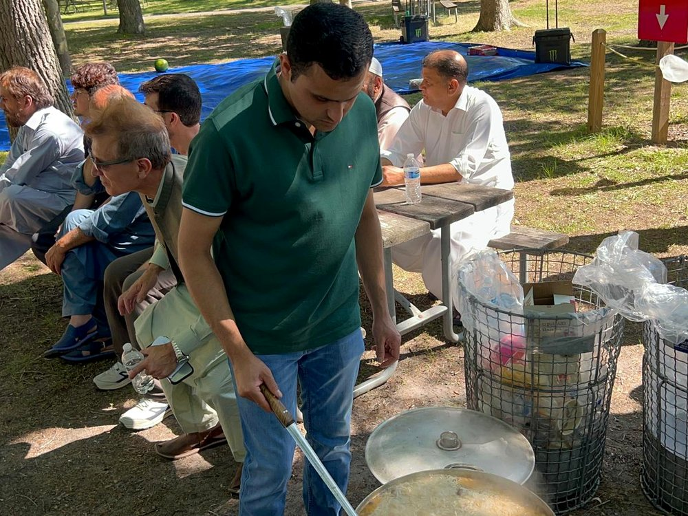
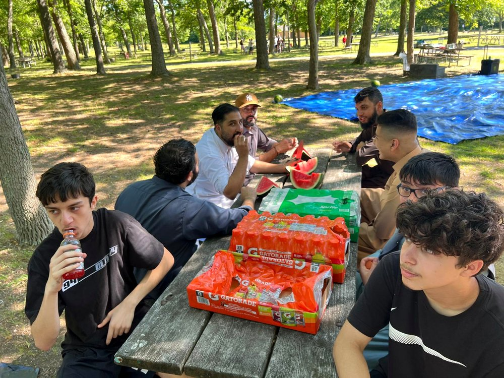
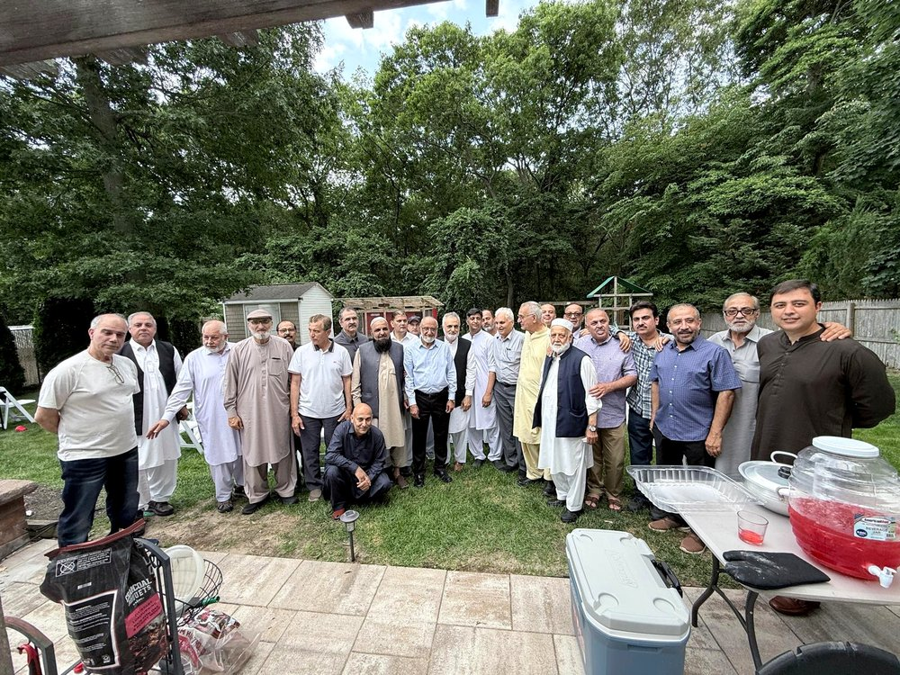
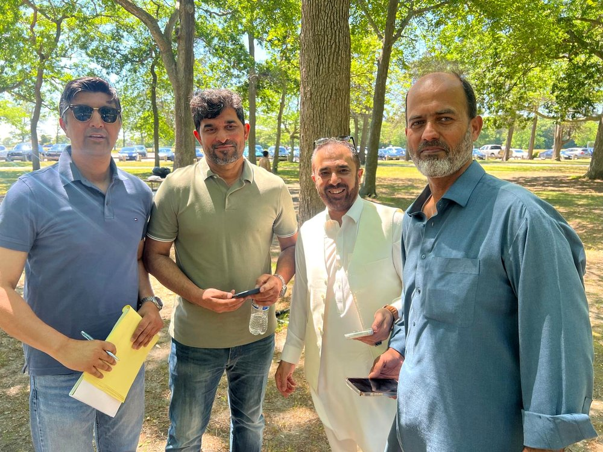
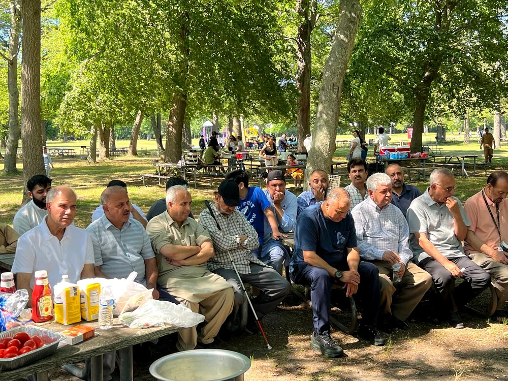

Programs & Services
Real help for real families — food, mentoring, settling support, and the gatherings that hold us together.

Food Pantry
Groceries and warm, home-cooked meals for families going through a hard stretch. We pack boxes, share Eid and Ramadan meals, and run food drives throughout the year — offered with dignity and discretion.

Youth Mentoring
Tutoring, guidance, and leadership for the next generation — homework help, college and career advice, and Pashto language and culture circles so our kids grow up grounded and proud.

Housing & Settling Help
A guiding hand for new arrivals and families in transition — help understanding housing options, paperwork and forms, school enrollment, and connecting to local resources to get settled and steady.

Cultural Preservation & Gatherings
Eid celebrations, summer picnics, poetry evenings, and music — the moments that keep our language and traditions alive and give every family a place to belong.

Family & Emergency Relief
When a family faces a sudden hardship — illness, loss, or crisis — we rally around them with practical and financial support, and with charity drives for relief efforts back home and here.